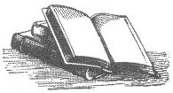

Kilisenin öğretilerine mutlak birer kural olarak bağlı olanların, o öğretinin bütün hususlarını kabul ettikleri açıktır.
AZİZ THOMAS AQUINAS
İnanmadığım bir tanrıya kızamam.
SIMONE DE BEAUVOIR
Tanrı yoksa, o zaman ateistler de yoktur.
G.K. CHESTERTON
Din, yarattığı karmaşaya avuntu sağlar.
BYRON DANELIUS
Ben son derece dindar bir inançsızım. Bu da yeni bir din şekli.
ALBERT EINSTEIN
Yarattığı şeyin kaderine yönelttiği felaket akla hayale sığmaz ve dayanılmaz olacağından, Yaratıcı diye bir şeyin olması mümkün değil.
ELIAS CANETTI
Tanrı'yı sevenler kendi türdeşleriyle her zaman dost olmayabilir.
ROBERT G. INGERSOLL
Tanrı'yı, ona en çok ihtiyaç duyduğunuz yerde aramayın. Onu oraya getirememişseniz, zaten yok demektir.
MIGNON MCLAUGHLIN
Bir felaketin ardından hayatta kalanlar için, şefkatli bir tanrı tarafından affedildiklerine, aynı tanrının beşiklerde bebekleri boğduğunu bile bile inanmanın ahlaki açıdan ne denli sorgulanabilir olduğunun yalnızca ateistler farkındadır.
SAM HARRIS
Bir konu hakkında son derece emin olmak için, bir kişinin o konu hakkında ya her şeyi bilmesi ya da hiçbir şey bilmemesi gerekir.
OLIN MILLER
Ben bir ateistim. Katolik Kilisesi'nin onaylamadığım birçok yanı var, bunun tek nedeni de beni onaylamamaları.
IAN MCKELLEN
Kimileri inandıkları şeyi anlamayı sever. Kimileriyse anladıkları şeye inanmayı.
STANISLAW JERZY LEC
İnsanlar, inanıyor olduklarına kendilerini inandırırlar.
MICHEL EYQUEM DE MONTAIGNE
Tanrı'ya şükür hâlâ ateistim.
LUIS BUÑUEL
Tanrı'nın en yüce övgüsünün, Yaratılış'ın bir yaratıcı olgusuna gerek duymayacak kadar mükemmel olduğunu düşünen ateistlerin onu reddetmesinde yattığı bile söylendi.
MARCEL PROUST

Tanrı dinsizleri korusun.
HOMER SIMPSON
Özgür iradeye inanmak zorundayız, başka çaremiz yok.
ISAAC BASHEVIS SINGER
Ben, ateist olarak yeniden doğdum.
GORE VIDAL
Söylenebilecek her şey açık bir şekilde söylenebilir. Ama kişi konuşamıyorsa, o zaman sükût etmelidir.
LUDWIG WITTGENSTEIN